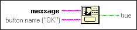
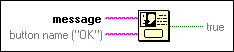

One Button Dialog Function
Owning Palette: Dialog & User Interface VIs and Functions
Requires: Base Development System
Displays a dialog box that contains a message and a single button.

 Add to the block diagram Add to the block diagram |
 Find on the palette Find on the palette |
Owning Palette: Dialog & User Interface VIs and Functions
Requires: Base Development System
Displays a dialog box that contains a message and a single button.

| Add to the block diagram |
Find on the palette |
 |
message is the text to display in the dialog box. The dialog box expands when you add more text. This function automatically wraps the text based on the size of the dialog box. The dialog box can display as much text as your computer screen can display. If you want a scrollbar to show when the size of the dialog box exceeds your desired size, use the Three Button Dialog VI. With this VI, you can convert a three button dialog box to a one or two button dialog box by wiring an empty string to a button text input to hide that button. |
|
button name is the name displayed in the dialog box button. The default is OK. |
 |
true returns a value of TRUE when this dialog box closes, regardless of whether you close the dialog by using the dialog box button or by using the close window button. You may use this output to provide execution ordering control for downstream functions. |